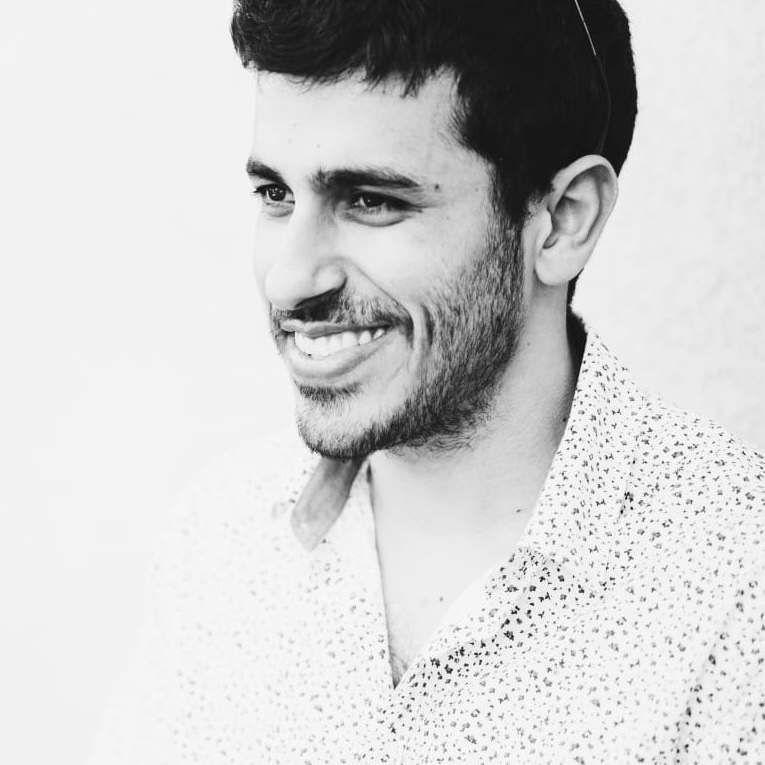

|
Osher Azulay I’m a Fulbright postdoctoral researcher at the University of Michigan, working with Prof. Stella Yu. I work at the intersection of robotics, computer vision, tactile sensing, and machine learning, aiming to advance humanoid intelligence. Previously, I earned my Ph.D. from Tel Aviv University in 2024, under the supervision of Dr. Avishai Sintov. My work focused on robotic in-hand manipulation, developing methods that leverage multimodal cues to enable more adaptive interaction. Always happy to connect—feel free to reach out. |
 |
{kind=link}
News
|
|
Selected Publications: |
|

|
VIGOR: Visual Goal-In-Context Inference for Unified Humanoid Fall
Safety
Osher Azulay, Zhengjie Xu, Andrew Scheffer, and Stella X. Yu. Under review. project page / paper Unified fall mitigation + stand-up recovery distilled into an egocentric-depth policy. |

|
Embodiment-Agnostic Navigation Policy Trained with Visual
Demonstrations
Nimrod Curtis*, Osher Azulay*, and Avishai Sintov. Under review. project page / paper / code / video Learns adaptive, collision-free motion from just a few visual demonstrations using diffusion. |

|
Visuotactile-Based Learning for Insertion with Compliant Hands
Osher Azulay, Dhruv Metha Ramesh, Nimrod Curtis and Avishai Sintov. IEEE RA-L & IROS, 2025. project page / paper / code Multimodal visuotactile policy for accurate pose estimation and sim-to-real insertion. |

|
AllSight: A Low-Cost and High-Resolution Round Tactile Sensor with
Zero-Shot Learning Capability
Osher Azulay, Nimrod Curtis, Rotem Sokolovsky, Guy Levitski, Daniel Slomovik, Guy Lilling and Avishai Sintov. IEEE RA-L & ICRA, 2024. paper / code / video Introducing AllSight, an optical tactile sensor with a round 3D structure designed for robotic inhand manipulation tasks |

|
Augmenting Tactile Simulators with Real-like and Zero-Shot
Capabilities
Osher Azulay*, Alon Mizrahi*, Nimrod Curtis* and Avishai Sintov. ICRA 2024. paper / code Bridges the sim-to-real gap for 3D shaped high-resolution tactile sensing using generative modeling. |

|
Haptic-Based and SE(3)-Aware Object Insertion Using Compliant Hands
Osher Azulay, Max Monastirsky and Avishai Sintov. IEEE RA-L & ICRA, 2023. paper / video Exploring complaint hands characteristics for object insertion using haptic-based residual RL. |

|
Learning to Throw With a Handful of Samples Using Decision
Transformers
Max Monastirsky, Osher Azulay and Avishai Sintov. IEEE RA-L & IROS, 2023. paper / video Exploring the use of Decision Transformers for throwing and their ability for sim2real policy transfer. |

|
Learning Haptic-based Object Pose Estimation for In-hand Manipulation
Control with Underactuated Robotic Hands
Osher Azulay, Inbar Meir and Avishai Sintov. IEEE Transactions on Haptics, 2022. paper / code / video In-hand object pose estimation and manipulation using Model Predictive Control. |

|
Open-Sourcing Generative Models for Data-driven Robot Simulations
Eran Bamani, Osher Azulay, Anton Gurevich, and Avishai Sintov. Data-Centric AI workshop, NeurIPS, 2021 project page / paper Exploring the possibility of investing the recorded data in a generative model rather than directly to a regression model for real-robot applications. |

|
Wheel Loader Scooping Controller Using Deep Reinforcement Learning
Osher Azulay and Amir Shapiro. IEEE Access, 2021 paper / code / video A deep reinforcement learning-based controller for an unmanned ground vehicle with a custom-built scooping mechanism. |
|
Template from source code. |
|